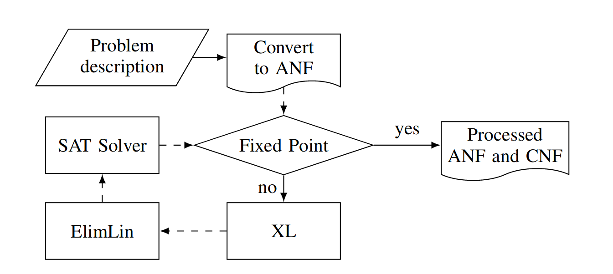

We are happy to release our ANF and CNF simplifier and converter called Bosphorus. It has helped us break multiple real-world ciphers. It has been re-released with major work by Davin Choo & Kian Ming A. Chai from DSO National Laboratories Singapore and Mate Soos & Kuldeep Meel from NUS. The paper will be published at the DATE 2019 conference.
ANFs and CNFs
Algebraic Normal Form is a form that is used by most cryptographers to describe symmetric ciphers, hash algorithms, and lately a lot of post-quantum asymmetric ciphers. It’s a very simple notation that basically looks like this:
x1 ⊕ x2 ⊕ x3 = 0
x1 * x2 ⊕ x2 * x3 + 1 = 0
Where “⊕” represents XOR and “*” represents the AND operator. So the first line here is an XOR of binary variables x1, x2 and x3 and their XOR must be equal to 0. The second line means that “(x1 AND x2) XOR (x2 AND x3)” must be equal to 1. This normal form allows to see a bunch of interesting things. For example, it allows us to see the so-called “maximum degree” of the set of equations, where the degree is the maximum number of variables AND-ed together in one line. The above set of equations has a maximum degree of 2, as (x1*x2) is of degree 2. Degrees can often be a good indicator for the complexity of a problem.
What’s good about ANFs is that there are a number of well-known algorithms to break problems described in them. For example, one can do (re)linearization and Gauss-Jordan elimination, or one could run Grobner-basis algorithms such as F4/F5 on it. Sometimes, the ANFs can also be solved by converting them to another normal form, Conjunctive Normal Form (CNF), used by SAT solvers. The CNF normal form looks like:
x1 V x2 V x3
-x1 V x3
Where x1, x2 and x3 are binary variables, “V” is the logical OR, and each line must be equal to TRUE. Using CNF is interesting, because the solvers used to solve them, SAT solvers, typically provide a different set of trade-offs for solving than ANF problem solvers. SAT solvers tend to use more CPU time but a lot less memory, sometimes making problems viable to solve in the “real world”. Whereas sometimes breaking of a cipher is enough to be demonstrated on paper, it also happens that one wants to break a cipher in the real world.
Bridging and Simplifying
We believe that Bosphorus is a first of its kind system that allows ANFs to be simplified using both CNF- and ANF-based systems. It can also convert between the two normal forms and can act both as an ANF and a CNF preprocessor, like SatELite (by Een and Biere) was for CNF. We believe this makes Bosphorus unique and also uniquely useful, especially while working on ANFs.
Bosphorus uses an iterative architecture that performs the following set of steps, either until it runs out of time or until fixed point:
- Replace variables and propagate constants in the ANF
- Run limited Extended Linarization (XL) and inject back unit and binary XORs
- Run limited ElimLin and inject back unit and binary XORs
- Convert to CNF, run a SAT solver for a limited number of conflicts and inject back unit and binary (and potentially longer) XORs

In other words, the system is an iterative simplifier/preprocessor that invokes multiple reasoning systems to try to simplify the problem as much as possible. It can outright solve the system, as most of these reasoning systems are complete, but the point is to run them only to a certain limit and inject back into the ANF the easily “digestible” information. The simplified ANF can then either be output as an ANF or a CNF.
Bosphorus can also take a CNF as input, perform the trivial transformation of it to ANF and then treat it as an ANF. This allows the CNF to be simplified using techniques previously unavailable to CNF systems, such as XL.
ANF to CNF Conversion
ANF-to-CNF conversion is not considered that hard, and that’s why there hasn’t been too much academic effort devoted to it. However, it’s an important step without which a lot of opportunities would be missed.
The implemented system contains a pretty advanced ANF-to-CNF converter, using Karnaugh tables through Espresso, XOR cutting, monomial reuse, etc. It should give a pretty optimal CNF for all ANFs. So Bosphorus can be used also just as an ANF-to-CNF converter, though it’s so much more.
Final Thoughts
One of the biggest capabilities of Bosphorus is that it can simplify/preprocess ANF systems so more heavyweight ANF solvers can have a go at them. Its ANF simplification is so powerful, it can even help to solve some CNFs by lifting them to ANF, running the ANF simplifiers, converting it back to CNF, and solving that(!). We believe our initial results, published in the paper, are very encouraging. Further, the system is in a ready-to-use state: there is a Docker image, the source should build without a hitch, and there is even a precompiled Linux binary. We would love to hear about your experience using it.
Thanks to Karsten Nohl from Security Research Labs. This post has been adapted from Mate’s post on Bosphorus.